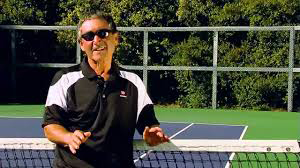

Invisible Greatness: Practice and Dominance¶
Nate Chura¶

Allen Fox: are you learning how to win in practice---or how to lose?
What about practice? What is the role of practice in developing greatness? Most of that is truly invisible to the fan---the years of development, what players do when not competing, what they do or don't do in that short off season at the end of the year.
First, who practices with whom? I can't tell you how many times I have heard players and parents claim "you get better by practicing with better players."
Tennis parents who know little or nothing about development especially love this thought. They often won't let their children practice with players they think are inferior.
As a lifelong coach I have found this statement to be erroneous. In my experience, the "better player" of the two is typically the player who gains the most from the practice.
Why? Listen to Dr. Allen Fox: "It is productive to play occasionally with better players," and just hitting balls with great players is fine.
"But when you're playing matches, you're essentially learning responses that work. In other words, the player's off in the forehand corner. You have an opening. How hard do you hit it? How close to the line? Do you go behind him? You have lots of options and, ultimately, when you play enough matches, you get a feel for what works in what situation.

Brad believed victories were what Andre needed.
"Now, if you play someone who's a lot better than you, nothing works in any situation. You hit the proper shot and you still lose the point. All you do is learn to lose. You don't learn how to use your game properly with the proper response to physical situations on the court.
"Secondly, you lose your confidence. You get the feeling that no matter what you do, you're gonna lose, because you do lose. I would say, it's best if, most of the time, you play players that you can beat or that are close, at the minimum."
This was the theory behind Fox's protégé, Brad Gilbert's strategy to revive Andre Agassi's career in the late nineteen-nineties. In 1997 Agassi's game and ranking plummeted to no. 141 in the world.
One of the ways Gilbert helped Agassi out of his slump was by talking him into playing the Challenger circuit to build up his confidence. It worked.
A similar strategy worked for the lesser known Vince Spadea who, in 2000, ended the longest losing streak in tennis history (21 matches) taking a similar path.
Winning leads to winning. The goal is to progress from being a losing player to a winning player to then, ultimately, a dominant player.
The Dominant Player
To expand more on this concept of the dominant player, I talked to Jacapo Tezza, who is the director of Evert Tennis Academy, and Reginaldo Moralejo, the director of the men's program. I asked them to describe what other invisible habits separate a dominant player from a subordinate player.

Jacapo Tezza of Evert Tennis Academy: dominant players break you down.
I laid out a scenario and asked for their thoughts. Let's say Roger Federer hits a serve out wide to your forehand on the deuce court and in response you blast a winner directly past him. But Federer appears unperturbed.
Subordinate players might think twice about serving to the same spot again.
But Roger Federer goes directly back to that same spot and has every intention of doing so until he beats you at it. Why?
Said Tezza, "The best players have so much confidence in themselves. They believe what they're doing is going to work, while somebody else may be a little hesitant. They are confident at the right moment.
"They break you down mentally by being aware of what's going on, understanding that at that moment the best thing for them to do in order to win the point. It takes a lot of confidence to do that.
"But it's also awareness. The best players are always aware of what's going on in the match and there is a certain point, a certain moment of the match that they raise their intensity, they raise their level of focus."
"Novak Djokovic," said Moralejo, "on very important points his eyes and look change completely. The width of his feet gets wider when he needs to break and the eyes get bigger and wider. He's almost saying, I'm really concentrating. I'm really watching this ball, making sure I don't miss it.
"The invisible part of that is he's sending a message to the server, saying 'Here I am going to break you right now.' I don't believe he uses the same face and the same look and the same stance when he's returning on the first point."
"He's aware of what's going on," Tezza added, "and he basically plays the way he wants to play. The best players, I think, have this awareness and confidence and those things, among others, I think separate the best players from the good players."
After I left the Evert Academy, I felt I finally had a roadmap. I felt reasonably confident I had identified the key pieces of the invisible puzzle that could improve any tennis player's game.

On big points Novak's eyes change.
But I was still troubled by that final roadblock: how a player makes the seismic jump from subordinate to dominant player within their sphere. After all, isn't this the common experience? Most of us know who our rivals are, who we beat and who beats us. How does Roger defeat Rafa at Roland Garros?
How does Maria Sharapova win against Serena Williams when her head-to-head is 2-19, and the last time she beat Williams was in 2004? Is it really possible? Consider this.
In January 2014, an hour before the biggest match of his life, Stanislas Wawrinka tweeted a bare-footed photo of his legs stretched out on a cushioned foot stool with the caption: "relaxing before the final." As history tells us, Stan was referring to the Australian Open final, where he would face Rafeal Nadal.
It looked like a stress-free portrait. Yet, at that point, Wawrinka had never made it to the final of a major before. To make matters worse, his head-to-head against Nadal going into the match was 0-12. In fact, Wawrinka had never even taken a set off the Spaniard!
But at the end of the day, Wawrinka won his first grand slam title...and it wasn't a fluke either. In 2015, he defeated world no. 1 Novak Djokovic to win the French Open and has remained ranked in the top 5 in the world ever since.
In his post-match press conference Stan said, "I was focused the whole match. I changed the momentum. I was really nervous, but I didn't choke. I was always going for my shot, always going for the right play."
All of this may have been true, but to the outside world it looked like the same old Wawrinka, only this time Wawrinka made his shots, instead of missing them, and beat the no. 1 player in the world, instead of losing to him.

The tattoo on his left arm---a commitment to positive thinking.
And while we may never truly learn all that contributed to this reversal, I think it's revealing that Stan dedicated the victory to his coach, Magnus Norman. "This one is for you," Wawrinka said to Norman.
"Maybe I helped him with the last steps," said Norman, modestly, "small things," invisible things!
One thing that is not invisible is the tattoo on Wawrinka's left forearm. In blue lettering, he inked perhaps the most important element of the invisible game -- the power of positive thinking. The exact wording actually comes from one of my favorite playwrights, Samuel Beckett. It reads: "Ever tried. Ever failed. No matter. Try again. Fail again. Fail better."
"It's my vision of my job and my life in general," says Wawrinka. "In tennis, as you know, if you are not Roger or Rafa and Djokovic or Andy now, you don't win so many tournaments and you always lose eventually even if it's in the final. But you need to take the positive of the loss and you need to go back to work. It's that simple."
But it turns out my quest to understand the totality of factors in invisible greatness wasn't actually that simple.
It started with the understanding that greatness means knowing exactly how you plan to win the 25 points you need to win a set. It moved to the ability to control your excitement and not pump up too much too soon when you when win some of those points.
Factors like sleep and diet and even the way a player warmups are invisible to most of the tennis watching world---unless you write a book about it. Open mindedness is the key to making improvements to take you up levels---even for, or especially for, the greatest players.
Desire and discipline also separate the elite players by some quantum factor. And confidence and dominance come from learning how to win---not losing close to players above you.
And I'm sure that's not all. Drop into the Forum and discuss it with me!
Casino in Brooklyn, NY. He is a graduate of
Emerson College in Boston, MA, a USPTA Elite
certified tennis coach, and certified Dartfish
technician. His first novel, The Man in the
Barn: Digging Up Lincoln's Killer, was released
on the 150th anniversary of John Wilkes Booth's
death.
 Club and head tennis professional at The Heights
Club and head tennis professional at The Heights